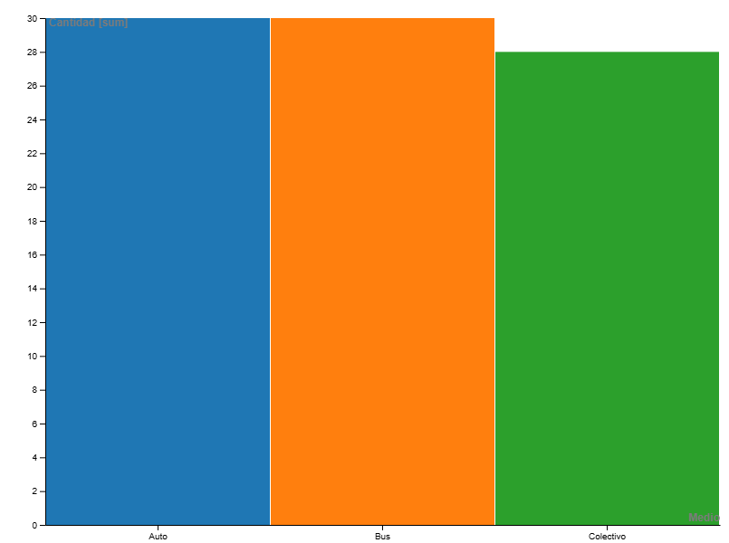

¿Qué quiero entender de mis traslados?
Este proyecto responde: (1) ¿Qué medio uso más? (2) ¿Cuánto gasto por mes? (3) ¿Cuál es mi tiempo promedio por medio? (4) ¿Qué medio es más eficiente en costo por minuto?
¿Qué medio de transporte uso más entre Santa Rosa y Pico?
¿Cuánto gasto en transporte por mes?
¿Cuál es el tiempo promedio por medio de transporte?
¿Qué medio es más eficiente en costo por minuto?